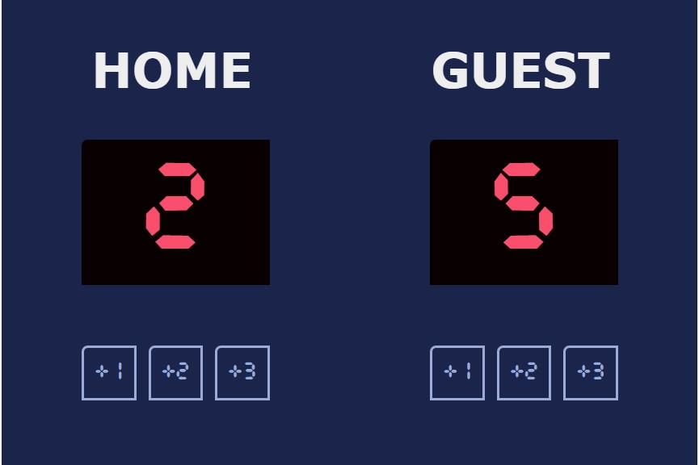

Basketball Scoreboard
Click

Click
The Basketball Scoreboard project is a web-based application designed to simulate a real-time scoreboard for a basketball game. This project allows users to track scores, fouls, and game time during a basketball match. It includes an intuitive interface for entering and displaying scores, as well as dynamic updates to reflect the flow of the game.
Purpose: This project was built to demonstrate skills in front-end web development, with a focus on real-time interactions and state management. It aims to provide users with an interactive and dynamic scoreboard, simulating a real-world use case and showcasing the ability to handle live updates.